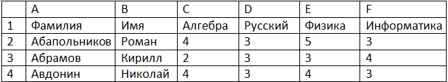
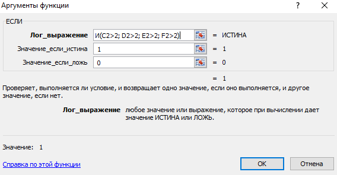
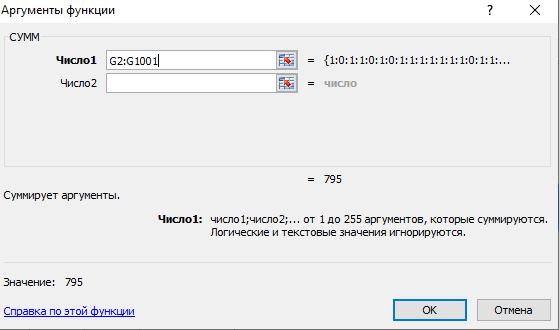
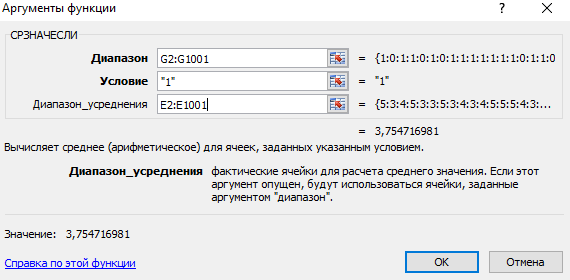
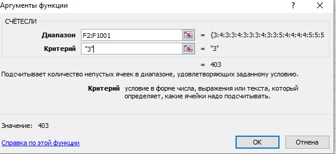
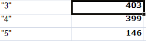
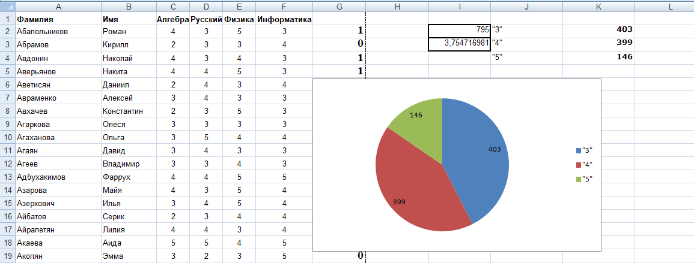

Результаты сдачи выпускных экзаменов по алгебре, русскому языку, физике и информатике учащимися 9 класса некоторого города были занесены в электронную таблицу. На рисунке приведены первые строки получившейся таблицы.

В столбце A электронной таблицы записана фамилия учащегося, в столбце B — имя учащегося, в столбцах C, D, E и F — оценки учащегося по алгебре, русскому языку, физике и информатике. Оценки могут принимать значения от 2 до 5. Всего в электронную таблицу были занесены результаты 1000 учащихся.
Выполните задание
Откройте файл с данной электронной таблицей. На основании данных, содержащихся в этой таблице, ответьте на два вопроса и постройте диаграмму.
1. Какое количество учащихся получило удовлетворительные оценки (то есть оценки выше 2) на всех экзаменах? Ответ на этот вопрос запишите в ячейку I2 таблицы.
2. Для группы учащихся, которые получили удовлетворительные оценки на всех экзаменах, посчитайте средний балл, полученный ими на экзамене по физике. Ответ на этот вопрос запишите в ячейку I3 таблицы с точностью не менее двух знаков после запятой.
3. Постройте круговую диаграмму, отображающую соотношение оценок по информатике «3», «4» и «5». Левый верхний угол диаграммы разместите вблизи ячейки G6.
В задание №14 необходимо знать все базовые команды Microsoft Excel, так как без них номер решать практически невозможно.
1) Для начала нас просят узнать какое количество учащихся получило удовлетворительные оценки (то есть оценки выше 2) на всех экзаменах для этого нужно воспользоваться двумя командами.

Первая необходима для того, чтобы выявить как каждый из учеников сдал экзамен. Единица означает, что все экзамены были сданы удовлетворительно, нолик означает, что как минимум один предмет сдан плохо(т.е есть двойка), а это уже не удовлетворяет нашему условию.
2) Следующим шагом мы просто сложим все единицы, функцией "СУММ", и получим ответ на первый вопрос.

3) После этого нас просят посчитать средний бал по физике только для учащихся, которые сдали удовлетворительно.

Это можно сделать одним действией с помощью данной команды.
Мы ответили на два вопроса, самое сложное позади. Осталось только сделать диаграмму. Для этого нужно выполнить несколько действий.

4) Для начала нужно просто посчитать сколько было троек, четверок и пятерок по информатике.

У нас должно получится вот такое поле. Обязательно нужно указать названия, без этого диаграмму не засчитают.

В итоге должно получиться вот так, на диаграмме нужно выделить числа. Файл нужно обязательно сохранить.